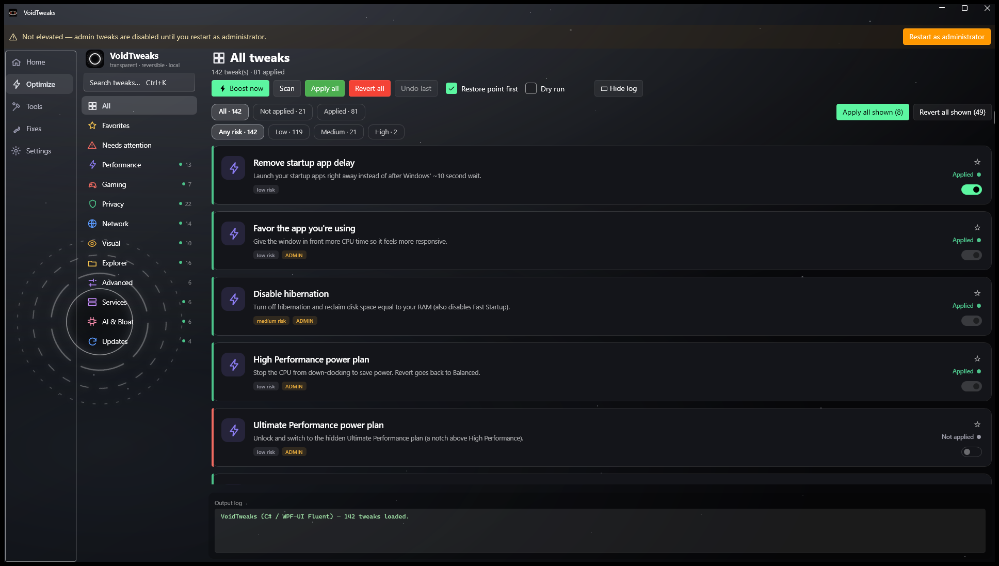

How to use VoidTweaks
From first launch to advanced tools — everything, in order. Takes about 10 minutes to read.
1. Install
Two ways — both self-contained, so .NET is not required:
- Installer (easiest): grab
VoidTweaks-Setup.exefrom the Download page and run it. - Portable: grab
VoidTweaks-portable.zip, unzip, and runVoidTweaks.exe. Keep the.jsonand.ps1files next to the.exe.
2. Run as administrator
Many tweaks change system-level settings and need admin rights. If you launched without them, the app shows a yellow banner — "Not elevated — admin tweaks are disabled until you restart as administrator." Click Restart as administrator (top-right), or right-click the exe → Run as administrator.
ADMIN badge. Non-admin tweaks still work without elevation.3. Restore point first
At the top you'll see "Restore point first" — leave it ticked (it's on by default). Before VoidTweaks applies anything, it creates a Windows System Restore point, so you can roll the whole machine back if something feels off. There's also a Dry run checkbox that shows what would run without changing anything — great for a first look.
4. The layout
VoidTweaks uses a three-pane layout:
- Icon rail (far left): Home · Optimize · Tools · Fixes · Settings.
- Category column: within Optimize — All, Favorites, Needs attention, and groups (Performance, Gaming, Privacy, Network, Visual, Explorer, Advanced, Services, AI & Bloat, Updates).
- Content: the tweak cards themselves.
The top bar (Boost · Scan · Apply all · Revert all · Undo last · Restore point first · Dry run) is always available.

5. Applying tweaks
Each tweak is a card. It shows what it does, its risk level (low / medium / high), any ADMIN or REBOOT badges, and the exact commands on hover.
Find a tweak
Browse a category, or useCtrl+Kto search by name.Toggle it on
Flip the switch. It turns green = applied. Flip it off to revert (red = not applied).Or apply in bulk
Use the state/risk filter chips, then Apply all shown / Revert all shown.★ Favorite
Star any tweak to pin it to the Favorites tab.
6. The queue
You don't have to wait for one tweak to finish before clicking the next. Clicks queue up and run one after another. A "N queued" badge appears in the header — click it to clear anything still pending. The Undo button then covers the whole batch you just queued.
7. Reverting & Undo
- Single tweak: flip its toggle back off.
- Undo last: reverts the tweaks you just applied (the whole queue run).
- Revert all: reverts every applied tweak in the current view.
- Full rollback: Tools → Restore points → restore to a point from before your changes.
8. Scan
Some tweaks aren't registry values (debloat, power plan, hibernation, boot settings, memory compression). The Scan button in the top bar probes your live system so every card shows its real current state. VoidTweaks also scans automatically in the background on launch.
9. Cleanup & Boost
- Clean everything (Tools → Cleanup): temp, Windows cache, thumbnails, Store cache, Recycle Bin, DNS flush, SSD trim, RAM free — in one click.
- Bulk debloat: remove common pre-installed junk (Xbox leftovers, Teams chat, Copilot, etc.) in one go — reversible from the Store.
- Boost now: RAMMap-style standby-list + working-set cleanup to free memory immediately.
10. Tools
- Restore points — create, list and restore; a change-history audit log shows what you applied and when.
- Startup & Process managers — trim what launches with Windows, inspect running processes.
- Presets — built-in and your own; export/import to share a setup.
- Health — a 0–100 score with live gauges and checks (updates, antivirus, pending reboots, startup load, drive type).
- System report — export a clean HTML with your specs, power plan and applied tweaks. Nothing personal leaves your PC unless you share the file.
- Game profiles — one-click, reversible tweak sets per game type (competitive FPS, AAA, streaming, low-end).
11. BIOS (advanced)
The BIOS & Firmware tool reads your UEFI, checks Secure Boot / TPM / virtualization, gives safe spec-aware tuning steps, and can reboot straight into UEFI setup. BIOS tweaks (HPET, dynamic tick, TSC, mitigations, C-states) sit behind an unskippable 15-second warning. VoidTweaks guides you — it never flips firmware switches for you.
12. Tips
- Keep Restore point first on, and only apply what you understand.
- Use Dry run to preview commands before committing.
- Change the language in Settings (9 available) and pick a style (NullZone / Legacy).
- Some tweaks need a reboot to fully take effect (they carry a
REBOOTbadge).